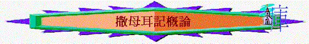

一.作者
「大衛王始終的事都寫在先見撒母耳的書上和先知拿單並先見迦得的書上。」代上29:29
〜作者是撒母耳，自25章後拿單與迦得二人補足，而猶太法典「他勒目」也有記載。
二.書名
「哈拿就懷孕。日期滿足，生了一個兒子，給他起名叫撒母耳，說：「這是我從耶和華那裡求來的。」」撒上1:20
〜在希伯來古卷原為一卷書----撒母耳記，但在後期七十士譯本為了方便使用，將書分為上下兩冊，而以「撒母耳」先知的名字為書卷，可能有以下3個原因:
1.是撒母耳寫的，所以用作者的名字為書名
2.撒母耳是書中重要的人物，不但是士師時期最後一位士師，也是膏立書中兩大主角----大衛與掃羅的先知，更是復興當時以色列國的英雄
3.撒母耳有「這是我從耶和華那裏求來的」意思，而事實上，書內的士師、君王、甚至每一場勝仗也是從耶和華而來的
三.時間
〜編書日期：在大衛去世後(撒下3:5)及猶大分裂國後(撒上27:6)
四.重要
1.從書卷角度：撒母耳是士師記的延續，是路得記的交待(交待大衛的出生)，是列王紀上下的引子(引出君王時代)
2.從歷史角度：記載了以色列人由士師時期至君王時期的轉移歷史
3.從宗教角度：啟示了神作事法則及人類成敗興衰的關鍵
4.從救恩角度：將救贖計劃藍圖逐步清晰表達出來(救恩從猶大家出來)
五.目的
1.指出以色列人如何厭棄神，如何由士師時期轉為君王時期的經過
2.從而帶出以色列人成敗興衰因素，作為他們日後的鑑戒
六.主題與大綱----成敗與興衰
1.事奉的成敗(撒上1-3)
2.民族的成敗(撒上4-7)
3.君王的成敗(撒上8-31)
4.家庭的成敗(撒下1-24)
七.強調
1.「立」----君王、領袖是神所立的，神有能力堅立他們
「與耶和華爭競的，必被打碎；耶和華必從天上以雷攻擊他，必審判地極的人，將力量賜與所立的王，高舉受膏者的角。」撒上2:10
「從但到別是巴所有的以色列人都知道耶和華立撒母耳為先知。」撒上3:20
「現在，你們所求所選的王在這裡。看哪，耶和華已經為你們立王了。」撒上12:13
「現在你的王位必不長久。耶和華已經尋著一個合他心意的人，立他作百姓的君，因為你沒有遵守耶和華所吩咐你的。」」撒上13:14
「大衛就知道耶和華堅立他作以色列王，又為自己的民以色列使他的國興旺。」撒下5:12
「你的家和你的國必在我（原文作你）面前永遠堅立。你的國位也必堅定，直到永遠。』」」撒下7:16
2.「棄」----神有權立君王，也有權廢棄他們
「悖逆的罪與行邪術的罪相等；頑梗的罪與拜虛神和偶像的罪相同。你既厭棄耶和華的命令，耶和華也厭棄你作王。」撒上15:23
「耶和華對撒母耳說：「我既厭棄掃羅作以色列的王，你為他悲傷要到幾時呢？你將膏油盛滿了角，我差遣你往伯利恆人耶西那裡去；因為我在他眾子之內，預定一個作王的。」」撒上16:1
「但我的慈愛仍不離開他，像離開在你面前所廢棄的掃羅一樣。」撒下7:15
3.「勝」與「敗」----得勝在乎神，神使人勝利，也使人敗亡
「約拿單對拿兵器的少年人說：「我們不如過到未受割禮人的防營那裡去，或者耶和華為我們施展能力；因為耶和華使人得勝，不在乎人多人少。」」撒上14:6
「又使這眾人知道耶和華使人得勝，不是用刀用槍，因為爭戰的勝敗全在乎耶和華。他必將你們交在我們手裡。」」撒上17:47
「於是大衛在大馬色的亞蘭地設立防營，亞蘭人就歸服他，給他進貢。大衛無論往那裡去，耶和華都使他得勝。」撒下8:6
「百姓回到營裡，以色列的長老說：「耶和華今日為何使我們敗在非利士人面前呢？我們不如將耶和華的約櫃從示羅抬到我們這裡來，好在我們中間救我們脫離敵人的手。」」撒上4:3
「撒母耳正獻燔祭的時候，非利士人前來要與以色列人爭戰。當日，耶和華大發雷聲，驚亂非利士人，他們就敗在以色列人面前。」撒上7:10
4.「求」----人若肯倚靠呼求神，就可得著至終勝利，也蒙神保守
「我祈求為要得這孩子；耶和華已將我所求的賜給我了。」撒上1:27
「撒母耳就把一隻吃奶的羊羔獻與耶和華作全牲的燔祭，為以色列人呼求耶和華；耶和華就應允他。」撒上7:9
「所以大衛求問耶和華說：「我去攻打那些非利士人可以不可以？」耶和華對大衛說：「你可以去攻打非利士人，拯救基伊拉。」」撒上23:2
「大衛求問耶和華說：「我可以上去攻打非利士人嗎？你將他們交在我手裡嗎？」耶和華說：「你可以上去，我必將非利士人交在你手裡。」」撒下5:19
「我在急難中求告耶和華，向我的神呼求。他從殿中聽了我的聲音；我的呼求入了他的耳中。」撒下22:7
5.「神使」----神才是至高者，他使人尊貴，也可使人卑微
「耶和華使人死，也使人活，使人下陰間，也使人往上升。他使人貧窮，也使人富足，使人卑微，也使人高貴。」撒上2:6-7
「又使這眾人知道耶和華使人得勝，不是用刀用槍，因為爭戰的勝敗全在乎耶和華。他必將你們交在我們手裡。」」撒上17:47
「大衛從掃羅的頭旁拿了槍和水瓶，二人就走了，沒有人看見，沒有人知道，也沒有人醒起，都睡著了，因為耶和華使他們沉沉地睡了。」撒上26:12
「王住在自己宮中，耶和華使他安靖，不被四圍的仇敵擾亂。」撒下7:1
「沙瑪卻站在那田間擊殺非利士人，救護了那田。耶和華使以色列人大獲全勝。」撒下23:12
6.「遵守」----人若肯遵守及順服神的吩咐，必得著成功與興旺
「撒母耳對掃羅說：「你做了糊塗事了，沒有遵守耶和華你神所吩咐你的命令。若遵守，耶和華必在以色列中堅立你的王位，直到永遠。現在你的王位必不長久。耶和華已經尋著一個合他心意的人，立他作百姓的君，因為你沒有遵守耶和華所吩咐你的。」」撒上13:13-14
「大衛就遵著耶和華所吩咐的去行，攻打非利士人，從迦巴直到基色。」撒下5:25
「耶和華按著我的公義報答我，按著我手中的清潔賞賜我。因為我遵守了耶和華的道，未曾作惡離開我的神。他的一切典章常在我面前；他的律例，我也未曾離棄。」撒下22:21-23
〜因此，撒母耳記強調人的興衰關鍵在乎神，神使人勝利，也可以使人失敗，人若肯順服神、倚靠神，神必能成為祂的保障，祂的高臺
八.重點研究(撒上)
1.關乎禱告
〜哈拿傾心吐意的禱告(1:9-18)
〜哈拿讚美的禱告(2:1-10)
〜以色列民懊悔禁食的禱告(7:6)
〜撒母耳復興的禱告(7:8-10)
〜大衛倚靠神的禱告(23:10-14,30:8-10)
2.關乎人生
〜蒙神使用的人生----撒母耳(1,3,7-9章)
〜有起有跌的人生----大衛(16-30)
〜有跌不起的人生----掃羅(13-31)
3.關乎爭戰
〜約櫃被擄之戰(4)
〜約櫃歸回之戰(5-6)
〜撒母耳與非利士人之戰(7)
〜約拿單突襲之戰(14)
〜大衛與歌利亞之戰(17)
〜大衛逃亡之戰(21-30)
〜掃羅最後之戰(31)
4.關乎情份
A.人與人之間的情
〜夫婦之情----以利加拿與哈拿(1)
〜牧者之情----撒母耳與以色列民(7,12)、撒母耳與掃羅(15)
〜君臣之情----大衛與掃羅(24-26)
〜朋友之情----大衛與約拿單(18-20,23)
B.神與人之間的情
〜大衛思念神之情(17:26,24:1-7,25:32-34,26:9-10,30:23)
〜神眷顧人之情(1,9,21-23章)